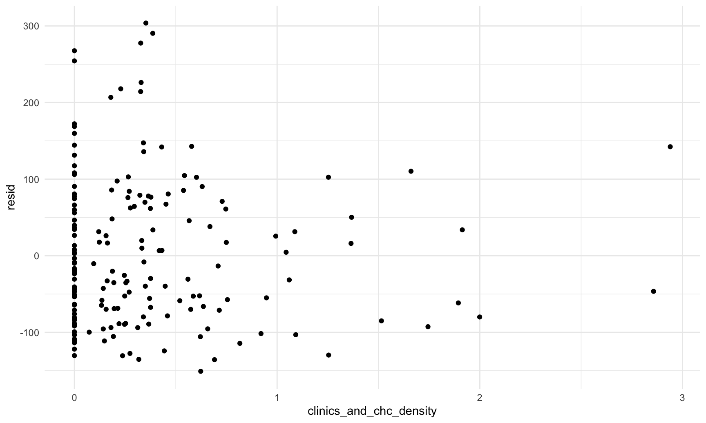
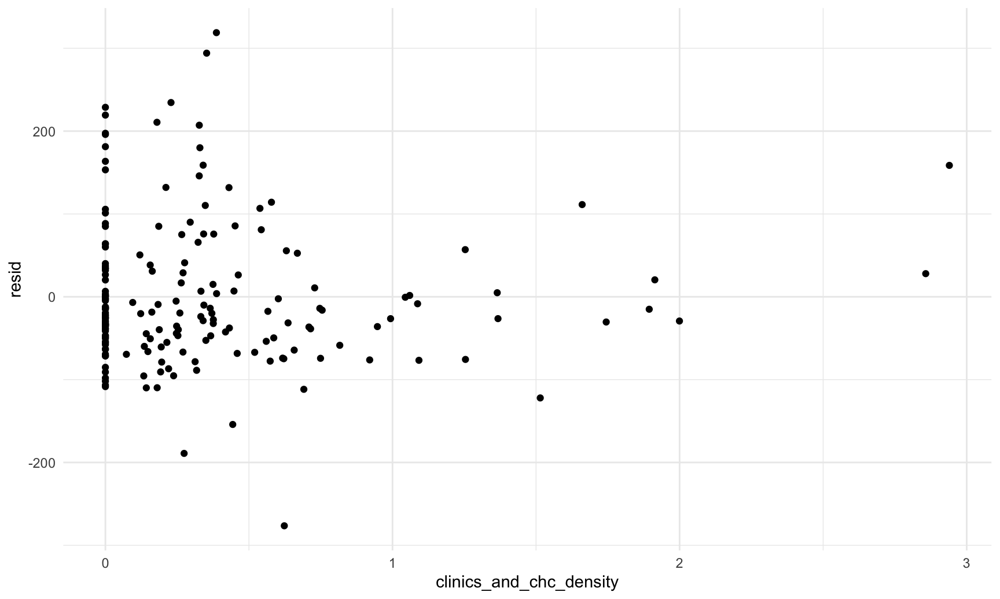
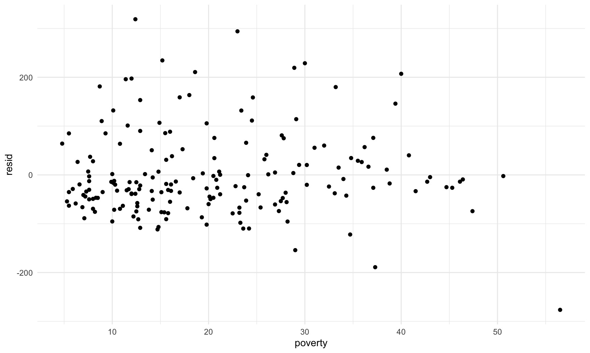
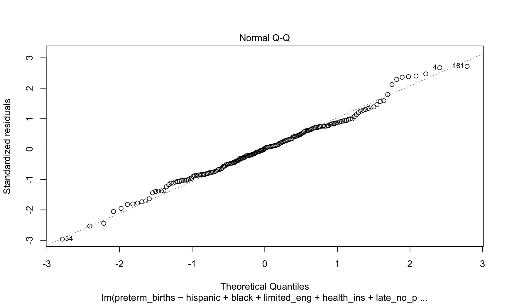
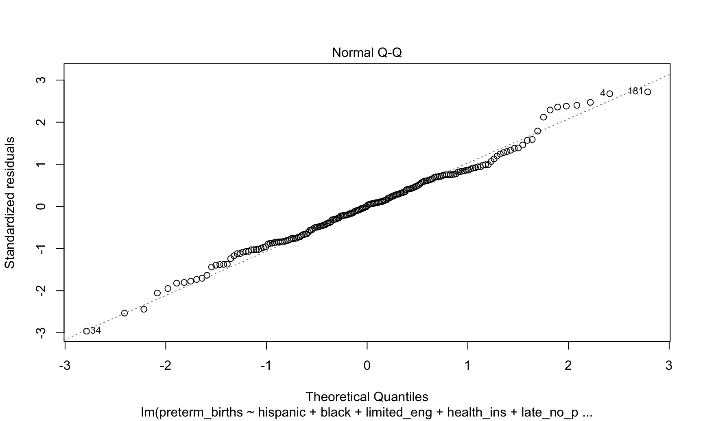
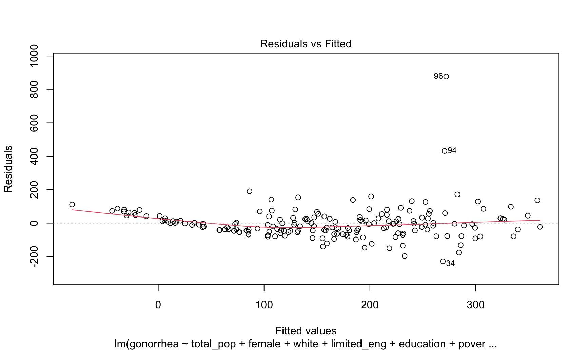
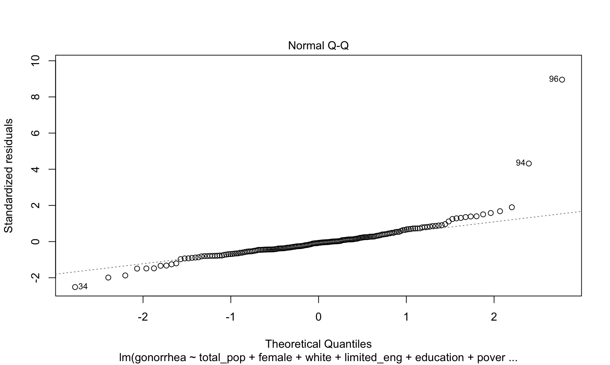
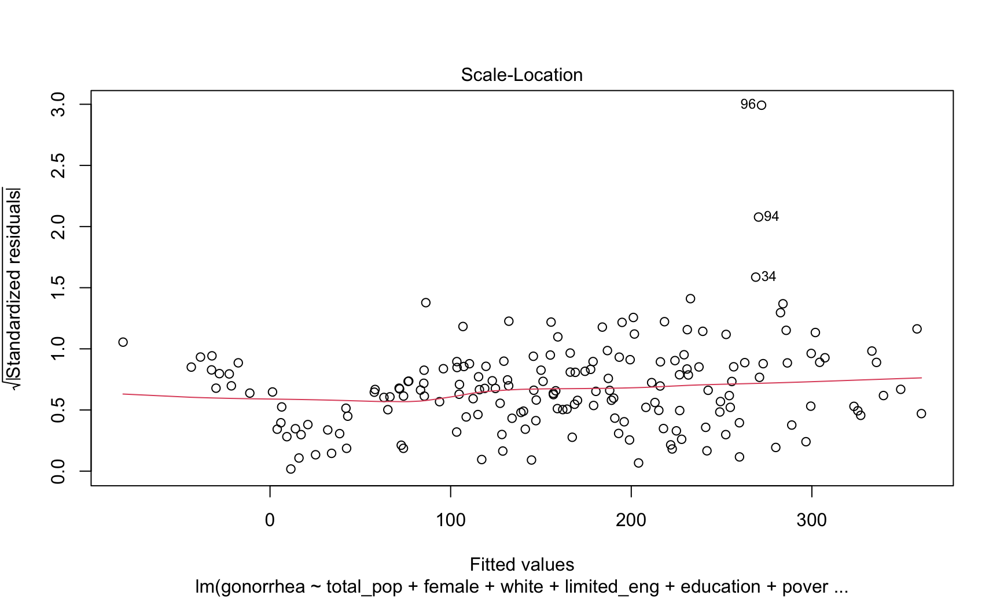
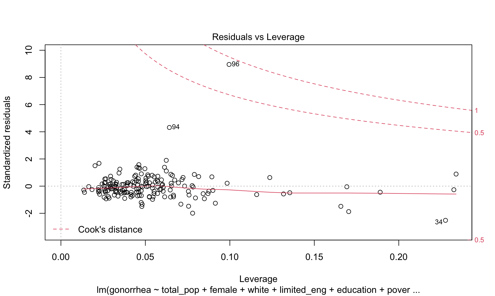

regression
Cynthia Liu (cl3938)
11/23/2020
Preliminary regression diagnostics:
Normality of outcome variables
We have three outcome variables of interest: preterm births, severe maternal morbidity (SMM), and gonorrhea.
We start by testing normality assumptions of dependent variables using histograms, Q-Q plots and Shapiro tests for normality.
#separate outcomes into separate dataframe
outcome_df = project_df %>%
dplyr::select(preterm_births, smm, gonorrhea)
#histograms
preterm_hist = ggplot(outcome_df, aes(x = preterm_births)) + geom_histogram()
smm_hist = ggplot(outcome_df, aes(x = smm)) + geom_histogram()
gonorrhea_hist = ggplot(outcome_df, aes(x = gonorrhea)) + geom_histogram()
#q-q plots
preterm_qq = ggqqplot(outcome_df$preterm_births)
smm_qq = ggqqplot(outcome_df$smm)
gonorrhea_qq = ggqqplot(project_df$gonorrhea)
#create patchwork plots
preterm_hist + preterm_qq## `stat_bin()` using `bins = 30`. Pick better value with `binwidth`.smm_hist + smm_qq## `stat_bin()` using `bins = 30`. Pick better value with `binwidth`.## Warning: Removed 5 rows containing non-finite values (stat_bin).## Warning: Removed 5 rows containing non-finite values (stat_qq).## Warning: Removed 5 rows containing non-finite values (stat_qq_line).
## Warning: Removed 5 rows containing non-finite values (stat_qq_line).gonorrhea_hist + gonorrhea_qq## `stat_bin()` using `bins = 30`. Pick better value with `binwidth`.## Warning: Removed 7 rows containing non-finite values (stat_bin).## Warning: Removed 7 rows containing non-finite values (stat_qq).## Warning: Removed 7 rows containing non-finite values (stat_qq_line).
## Warning: Removed 7 rows containing non-finite values (stat_qq_line).#run shapiro-wilk tests
outcome_df %>% shapiro_test(preterm_births, smm, gonorrhea) %>%
knitr::kable(digits = 3)| variable | statistic | p |
|---|---|---|
| gonorrhea | 0.808 | 0.000 |
| preterm_births | 0.982 | 0.016 |
| smm | 0.933 | 0.000 |
Outcome variables are likely sampled from a non-normal distribution, as indicated by significant p-values for the Shapiro test and fat tails in the Q-Q plots: not a deal-breaker, since residuals are what are important, but certainly presents the possibility that linear regression may not be the best model for our data.
Exploratory linear regressions
(maybe should delete this part)
Let’s start with some exploratory linear regressions with the outcome of several maternal morbidity:
project_df = project_df %>%
mutate(clinics_and_chc_density = ((clinics + community_health_centers)/total_pop)*10000,
non_pcmd_density = (non_pcmd/total_pop)*10000)
fit = lm(smm ~ clinics_and_chc_density, data = project_df)
fit %>%
broom::tidy() %>%
knitr::kable()| term | estimate | std.error | statistic | p.value |
|---|---|---|---|---|
| (Intercept) | 226.650732 | 8.700562 | 26.0501256 | 0.0000000 |
| clinics_and_chc_density | 5.236386 | 14.419961 | 0.3631345 | 0.7169281 |
project_df %>%
modelr::add_residuals(fit) %>%
ggplot(aes(x = clinics_and_chc_density, y = resid)) + geom_point()## Warning: Removed 5 rows containing missing values (geom_point).
summary(fit)$r.squared## [1] 0.0007280148These residuals are clearly skewed, with higher positive residuals and negative residuals. Linear regression is likely not appropriate here. Also this is a very bad fit, judging by the R-squared value.
Let’s try adding poverty as a confounder:
Linear regression with health centers and poverty
fit2 = lm(smm ~ clinics_and_chc_density + poverty, data = project_df)
fit2 %>%
broom::tidy() %>%
knitr::kable()| term | estimate | std.error | statistic | p.value |
|---|---|---|---|---|
| (Intercept) | 158.798305 | 13.8442401 | 11.4703518 | 0.0000000 |
| clinics_and_chc_density | -7.005778 | 13.3599014 | -0.5243884 | 0.6006536 |
| poverty | 3.559096 | 0.5939145 | 5.9926063 | 0.0000000 |
project_df %>%
modelr::add_residuals(fit2) %>%
ggplot(aes(x = clinics_and_chc_density, y = resid)) + geom_point()## Warning: Removed 5 rows containing missing values (geom_point).
project_df %>%
modelr::add_residuals(fit2) %>%
ggplot(aes(x = poverty, y = resid)) + geom_point()## Warning: Removed 5 rows containing missing values (geom_point).
summary(fit2)$r.squared## [1] 0.1669314The normality assumption remains violated, and the fit is better but still nowhere near where we’d like. It’s possible things will improve with more predictors added to the model, but doing it by hand may take a while, so we’re going to try automatic model selection and should maybe consider some other regression models.
Analysis Plan
Moving forward, we will try two methods of regression: a multiple linear regression using our rate data, and a Poisson model using count data to account for a possible non-normal response distribution.
Models will be selected with a stepwise automatic model selection process, which iteratively adds and removes predictors to the model until it converges. Please note that there is some debate regarding the statistical validity of stepwise model selection using AIC as a metric, further discussed in the appendix. For our purposes, we will use it for exploratory analysis due to ease of implementation and its intuitive approach and approach our results critically with respect to the algorithm’s pitfalls.
Models will be judged on: * Satisfaction of assumptions for their respective method * Best fit as judged by Akaike information criterion (AIC), which considers both goodness-of-fit (rewarding models that explain higher variation in the outcome) and model parsimony (penalizing for too many predictors). AIC is applicable to both linear and Poisson models.
Multicollinearity Considerations
Let’s check for potential multicollinearity among predictors first, since stepwise model selection will exacerbate any existing multicollinearity in our model.
The following steps were taken
- Remove identifiers like neighborhood names/NTA codes
- Remove outcome variables & pre-transformed variables (i.e. clinic count)
- Construct a Pearson correlation matrix of predictors, using pair-wise (instead of case) deletion of datapoints with missing values
#create dataset of predictors ONLY
predictors_df = project_df %>%
dplyr::select(-c("nta_name","nta_code", "preterm_births", "gonorrhea", "smm", "clinics", "community_health_centers", "non_pcmd", "clinics_and_chc_count"))
N <- rcorr(as.matrix(predictors_df), type = c("pearson")) #pair-wise deletion
corrplot::corrplot(N$r,
type = "lower",
method = "square",
addCoef.col = "black",
diag = FALSE,
number.cex = .6,
tl.col = "black",
tl.cex = .9,
tl.srt = 45)There appears to several highly correlated potential predictors in our dataset, with strong positive and negative relationships present. There is a strong possibility of multicollinearity in our final models, so results will have to be viewed carefully.
Most starkly, race remains highly correlated with health and SES-related outcomes at a neighborhood level. For example, there is a strong negative correlation between percent population that identifies as white and levels of poverty, unemployment, and late or no prenatal care. This relationship becomes positive when considering percent population that identifies as Hispanic. Surprisingly, proportion of population that identifies as black have weak to no relationship with SES-related outcomes like low educational attainment or poverty, but the strongest relationship with late or no prenatal care (R = 0.54)
Outcome: Severe Maternal Morbidity
Linear Regression Moel
Let’s start by fitting a linear model to the severe maternal morbidity
#Combined predictors with SMM outcome
smm_linear_df = predictors_df %>%
mutate(smm = outcome_df$smm)
#Fit the full model
full_smm_linear.model <- lm(smm~., data = smm_linear_df)
#Stepwise regression model
step_smm_linear.model <- stepAIC(full_smm_linear.model, direction = "both",
trace = FALSE)Next, we’ll take a look at the chosen predictors, effect measures, and run regression diagnostics
#Display converged model
step_smm_linear.model %>%
broom::tidy() %>%
knitr::kable()| term | estimate | std.error | statistic | p.value |
|---|---|---|---|---|
| (Intercept) | -163.9993036 | 113.1106064 | -1.449902 | 0.1489068 |
| female | 2.9376195 | 1.9561898 | 1.501705 | 0.1350070 |
| hispanic | 0.9820437 | 0.4073069 | 2.411066 | 0.0169590 |
| white_non_hisp | 0.8721465 | 0.4302774 | 2.026940 | 0.0442127 |
| black_non_hisp | 2.4258881 | 0.4202314 | 5.772743 | 0.0000000 |
| foreign_born | 1.7293970 | 0.6554211 | 2.638604 | 0.0090889 |
| limited_eng | -1.7226345 | 0.7935614 | -2.170764 | 0.0313196 |
| edu_less_than_hs | 1.8529155 | 0.9221389 | 2.009367 | 0.0460618 |
| unemployment | 3.1239565 | 1.5675372 | 1.992907 | 0.0478530 |
| late_no_prenatal_care | 3.9060537 | 1.9313507 | 2.022447 | 0.0446794 |
| clinics_and_chc_density | 12.6217292 | 7.4769317 | 1.688089 | 0.0932064 |
The variables female, hispanic, white_non_hisp, black_non_hisp, foreign_born, limited_eng, edu_less_than_hs, unemployment, late_no_prenatal_care, and clinics_and_chc_density were chosen in the final model. The model has an R-squared value of summary(step_smm_linear.model)$r.squared, representing a reasonably good fit.
However, we were concerned about our assumptions for linear regression, so they need to be checked before we can interpret any results.
#Regression diagnostics
plot(step_smm_linear.model)


#Shapiro test
smm_linear_shapiro = shapiro.test(residuals(step_smm_linear.model))The Normal Q-Q plot has fat tails, suggesting violation of the normality assumption. This is confirmed with the Shapiro-Wilk test for normality, which has a p-value of smm_linear_shapiro$p.value. The plot of residuals vs fitted values is non-random, suggesting a violation of the homoskedasticity assumption, also indicated by the scale-location plot, where the line is not straight.
We’ll stop this analysis here since it’s clear the model doesn’t follow linear assumptions.
Building Poisson regression model
Since the underlying distribution is clearly non-linear, we will try a Poisson distribution.
To do this, we will:
- Convert the SMM variable, which is a rate per 10,000 back into a count using the number of live births
Poisson_regression_df = project_df Outcome: Preterm Births
Let’s start by fitting a linear model to the preterm births outcome
#Combined predictors with preterm births outcome
preterm_linear_df = predictors_df %>%
mutate(preterm_births = outcome_df$preterm_births)
#Fit the full model
full_preterm_linear.model <- lm(preterm_births~., data = preterm_linear_df)
#Stepwise regression model
step_preterm_linear.model <- stepAIC(full_preterm_linear.model, direction = "both",
trace = FALSE)Next, we’ll take a look at the chosen predictors, effect measures, and run regression diagnostics
#Display converged model
step_preterm_linear.model %>%
broom::tidy() %>%
knitr::kable()| term | estimate | std.error | statistic | p.value |
|---|---|---|---|---|
| (Intercept) | 1.7598673 | 2.5887111 | 0.6798238 | 0.4974894 |
| hispanic | 0.0193279 | 0.0060340 | 3.2031890 | 0.0016075 |
| black_non_hisp | 0.0465313 | 0.0062663 | 7.4256852 | 0.0000000 |
| other_race | 0.0532779 | 0.0369443 | 1.4421124 | 0.1510083 |
| limited_eng | -0.0176602 | 0.0106726 | -1.6547200 | 0.0997239 |
| health_ins | 0.0648516 | 0.0261957 | 2.4756626 | 0.0142234 |
| late_no_prenatal_care | 0.0782940 | 0.0425390 | 1.8405251 | 0.0673376 |
| non_pcmd_density | -0.0023236 | 0.0014906 | -1.5588573 | 0.1207866 |
summary(step_preterm_linear.model)$r.squared## [1] 0.6501947The 7 variables hispanic, black_non_hisp, other_race, limited_eng, health_ins, late_no_prenatal_care, and non_pcmd_density were chosen in the final model. The model has an R-squared value of summary(step_preterm_linear.model)$r.squared, representing a less-than-ideal fit with our predictor set
However, we were concerned about our assumptions for linear regression, so they need to be checked before we can interpret any results.
#Regression diagnostics
plot(step_preterm_linear.model) 

#Shapiro test
preterm_linear_shapiro = shapiro.test(residuals(step_preterm_linear.model))The linear regression assumptions are satisfied, so this is a valid model. The Normal Q-Q plot is reasonably well fit, and Shapiro-Wilk test for normality, which has a p-value of preterm_linear_shapiro$p.value, confirms the normality assumption. The data also roughly follows the homoskedasticity assumption, with no outliers outside 3 standard deviations or influential points. Though one point has high leverage, it is not higher than our rule-of-thumb threshold of 0.085. This is calculated using the rule of thumb equation 2(p + 1)/n, where p is the number of predictors and n the number of observations.
Outcome: Gonorrhea
Let’s start by fitting a linear model to the gonorrhea outcome variable
#Combined predictors with SMM outcome
gonorrhea_linear_df = predictors_df %>%
mutate(gonorrhea = outcome_df$gonorrhea)
#Fit the full model
full_gonorrhea_linear.model <- lm(gonorrhea~., data = gonorrhea_linear_df)
#Stepwise regression model
step_gonorrhea_linear.model <- stepAIC(full_gonorrhea_linear.model, direction = "both",
trace = FALSE)Next, we’ll take a look at the chosen predictors, effect measures, and run regression diagnostics
#Display converged model
step_gonorrhea_linear.model %>%
broom::tidy() %>%
knitr::kable()| term | estimate | std.error | statistic | p.value |
|---|---|---|---|---|
| (Intercept) | 958.7225764 | 220.1681503 | 4.354502 | 0.0000231 |
| total_pop | 0.0008114 | 0.0003602 | 2.252242 | 0.0255942 |
| female | -18.3673381 | 4.1971286 | -4.376168 | 0.0000211 |
| hispanic | 1.5942226 | 0.8243833 | 1.933837 | 0.0548040 |
| black_non_hisp | 2.1421982 | 0.6611569 | 3.240076 | 0.0014391 |
| asian_pi | 2.8951692 | 0.9999893 | 2.895200 | 0.0042898 |
| limited_eng | -3.2650069 | 1.3840835 | -2.358967 | 0.0194684 |
| edu_less_than_hs | -4.0744138 | 2.1585429 | -1.887576 | 0.0607971 |
| poverty | 13.8132288 | 1.9474852 | 7.092854 | 0.0000000 |
| medicaid_enroll | -5.2761477 | 1.5855009 | -3.327748 | 0.0010744 |
| late_no_prenatal_care | 6.4749328 | 3.8047051 | 1.701823 | 0.0906275 |
| clinics_and_chc_density | 26.1880599 | 15.7444747 | 1.663318 | 0.0981022 |
summary(step_gonorrhea_linear.model)$r.squared## [1] 0.4965378The variables female, hispanic, white_non_hisp, black_non_hisp, foreign_born, limited_eng, edu_less_than_hs, unemployment, late_no_prenatal_care, and clinics_and_chc_density were chosen in the final model. The model has an R-squared value of summary(step_smm_linear.model)$r.squared, representing a reasonably good fit.
However, we were concerned about our assumptions for linear regression, so they need to be checked before we can interpret any results.
#Regression diagnostics
plot(step_gonorrhea_linear.model)
#Shapiro test
gonorrhea_linear_shapiro = shapiro.test(residuals(step_gonorrhea_linear.model))The Normal Q-Q plot has fat tails, suggesting violation of the normality assumption. This is confirmed with the Shapiro-Wilk test for normality, which has a p-value of gonorrhea_linear_shapiro$p.value. The plot of residuals vs fitted values has non-random variance, suggesting a violation of the homoskedasticity assumption, also indicated by the scale-location plot, where the line is not straight.
We’ll stop this analysis here since it’s clear the model doesn’t follow linear assumptions, but it’s important to note that further analysis would also have to investigate the potential outliers & high leverage points found in the residuals vs. leverage plot.
A quick look at the dataset shows that both these data points, corresponding to the neighborhoods of Clinton (Hell’s Kitchen) and Hudson Yards-Chelsea-Flat Iron-Union Square possess the highest and second highest rates of gonorrhea, respectively. These numbers are at odds with their majority white, affluent, and well-educated residents. We posit it may be because they have high LGBTQ+ populations - prior research [add link here?] suggests that MSM (men who have sex with men) are at much higher risk of STDs than women or heterosexual men.
Poisson Regression
offset_total_pop = log(predictors_df$total_pop)
gonorrhea_poisson_df = predictors_df %>%
mutate(gonorrhea_count = round(project_df$gonorrhea*(total_pop/100000))) %>%
dplyr::select(-total_pop)
full_gonorrhea_poisson.model <- glm(gonorrhea_count~.+offset(offset_total_pop), data=gonorrhea_poisson_df, family=poisson(link = "log"))
step_gonorrhea_poisson.model <- stepAIC(full_gonorrhea_poisson.model, direction = "both",
trace = FALSE)
summary(step_gonorrhea_poisson.model)##
## Call:
## glm(formula = gonorrhea_count ~ female + hispanic + white_non_hisp +
## black_non_hisp + asian_pi + other_race + foreign_born + limited_eng +
## edu_less_than_hs + poverty + unemployment + health_ins +
## medicaid_enroll + late_no_prenatal_care + clinics_and_chc_density +
## offset(offset_total_pop), family = poisson(link = "log"),
## data = gonorrhea_poisson_df)
##
## Deviance Residuals:
## Min 1Q Median 3Q Max
## -9.7233 -3.1480 -0.9599 1.4784 18.1902
##
## Coefficients:
## Estimate Std. Error z value Pr(>|z|)
## (Intercept) 25.969335 11.229606 2.313 0.020746 *
## female -0.171087 0.005730 -29.858 < 2e-16 ***
## hispanic -0.229036 0.112677 -2.033 0.042085 *
## white_non_hisp -0.250062 0.112749 -2.218 0.026564 *
## black_non_hisp -0.230784 0.112839 -2.045 0.040830 *
## asian_pi -0.228452 0.112831 -2.025 0.042895 *
## other_race -0.263349 0.112516 -2.341 0.019255 *
## foreign_born 0.003794 0.001684 2.253 0.024243 *
## limited_eng -0.025827 0.002737 -9.435 < 2e-16 ***
## edu_less_than_hs -0.039171 0.003011 -13.011 < 2e-16 ***
## poverty 0.093207 0.002570 36.269 < 2e-16 ***
## unemployment 0.014658 0.003789 3.869 0.000109 ***
## health_ins 0.005909 0.003619 1.633 0.102559
## medicaid_enroll -0.041648 0.001957 -21.280 < 2e-16 ***
## late_no_prenatal_care 0.024897 0.004514 5.515 3.49e-08 ***
## clinics_and_chc_density 0.197757 0.018265 10.827 < 2e-16 ***
## ---
## Signif. codes: 0 '***' 0.001 '**' 0.01 '*' 0.05 '.' 0.1 ' ' 1
##
## (Dispersion parameter for poisson family taken to be 1)
##
## Null deviance: 8729.6 on 180 degrees of freedom
## Residual deviance: 3168.0 on 165 degrees of freedom
## (7 observations deleted due to missingness)
## AIC: 4215.1
##
## Number of Fisher Scoring iterations: 5#Display converged model
step_gonorrhea_poisson.model %>%
broom::tidy() %>%
knitr::kable()| term | estimate | std.error | statistic | p.value |
|---|---|---|---|---|
| (Intercept) | 25.9693350 | 11.2296057 | 2.312578 | 0.0207459 |
| female | -0.1710872 | 0.0057301 | -29.857883 | 0.0000000 |
| hispanic | -0.2290362 | 0.1126768 | -2.032683 | 0.0420846 |
| white_non_hisp | -0.2500616 | 0.1127489 | -2.217862 | 0.0265643 |
| black_non_hisp | -0.2307841 | 0.1128392 | -2.045248 | 0.0408304 |
| asian_pi | -0.2284521 | 0.1128309 | -2.024730 | 0.0428951 |
| other_race | -0.2633491 | 0.1125157 | -2.340555 | 0.0192551 |
| foreign_born | 0.0037942 | 0.0016839 | 2.253264 | 0.0242425 |
| limited_eng | -0.0258270 | 0.0027373 | -9.435072 | 0.0000000 |
| edu_less_than_hs | -0.0391711 | 0.0030107 | -13.010815 | 0.0000000 |
| poverty | 0.0932068 | 0.0025699 | 36.269257 | 0.0000000 |
| unemployment | 0.0146580 | 0.0037887 | 3.868845 | 0.0001094 |
| health_ins | 0.0059091 | 0.0036195 | 1.632571 | 0.1025592 |
| medicaid_enroll | -0.0416484 | 0.0019572 | -21.279544 | 0.0000000 |
| late_no_prenatal_care | 0.0248969 | 0.0045143 | 5.515137 | 0.0000000 |
| clinics_and_chc_density | 0.1977566 | 0.0182646 | 10.827288 | 0.0000000 |
Severe overdispersion (deviance/df >> 1): try negative binomial
full_gonorrhea_neg_bin.model <- glm.nb(gonorrhea_count~.+offset(offset_total_pop), data=gonorrhea_poisson_df)
step_gonorrhea_neg_bin.model <- stepAIC(full_gonorrhea_neg_bin.model, direction = "both",
trace = FALSE)
summary(step_gonorrhea_neg_bin.model)##
## Call:
## glm.nb(formula = gonorrhea_count ~ female + hispanic + black_non_hisp +
## asian_pi + limited_eng + edu_less_than_hs + poverty + medicaid_enroll +
## late_no_prenatal_care + clinics_and_chc_density + offset(offset_total_pop),
## data = gonorrhea_poisson_df, init.theta = 3.795503416, link = log)
##
## Deviance Residuals:
## Min 1Q Median 3Q Max
## -2.6042 -0.8290 -0.1734 0.3556 3.6396
##
## Coefficients:
## Estimate Std. Error z value Pr(>|z|)
## (Intercept) -0.954326 1.151624 -0.829 0.40729
## female -0.129289 0.022114 -5.846 5.02e-09 ***
## hispanic 0.019714 0.004335 4.548 5.41e-06 ***
## black_non_hisp 0.021111 0.003450 6.119 9.44e-10 ***
## asian_pi 0.025527 0.005384 4.742 2.12e-06 ***
## limited_eng -0.022544 0.007258 -3.106 0.00190 **
## edu_less_than_hs -0.026181 0.011403 -2.296 0.02168 *
## poverty 0.102469 0.010249 9.998 < 2e-16 ***
## medicaid_enroll -0.047205 0.008199 -5.757 8.55e-09 ***
## late_no_prenatal_care 0.029240 0.019741 1.481 0.13857
## clinics_and_chc_density 0.224418 0.082535 2.719 0.00655 **
## ---
## Signif. codes: 0 '***' 0.001 '**' 0.01 '*' 0.05 '.' 0.1 ' ' 1
##
## (Dispersion parameter for Negative Binomial(3.7955) family taken to be 1)
##
## Null deviance: 495.83 on 180 degrees of freedom
## Residual deviance: 187.66 on 170 degrees of freedom
## (7 observations deleted due to missingness)
## AIC: 1699.6
##
## Number of Fisher Scoring iterations: 1
##
##
## Theta: 3.796
## Std. Err.: 0.430
##
## 2 x log-likelihood: -1675.638This is much better! We will keep this model.
Appendix
Stepwise model selection criticism
Naive, greedy algorithm prone to being stuck in local optima. link to Harrel (2001) Future model selection using Lasso & LAR